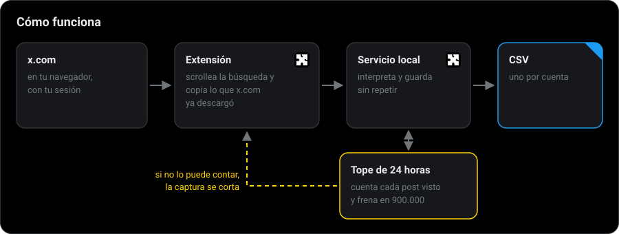
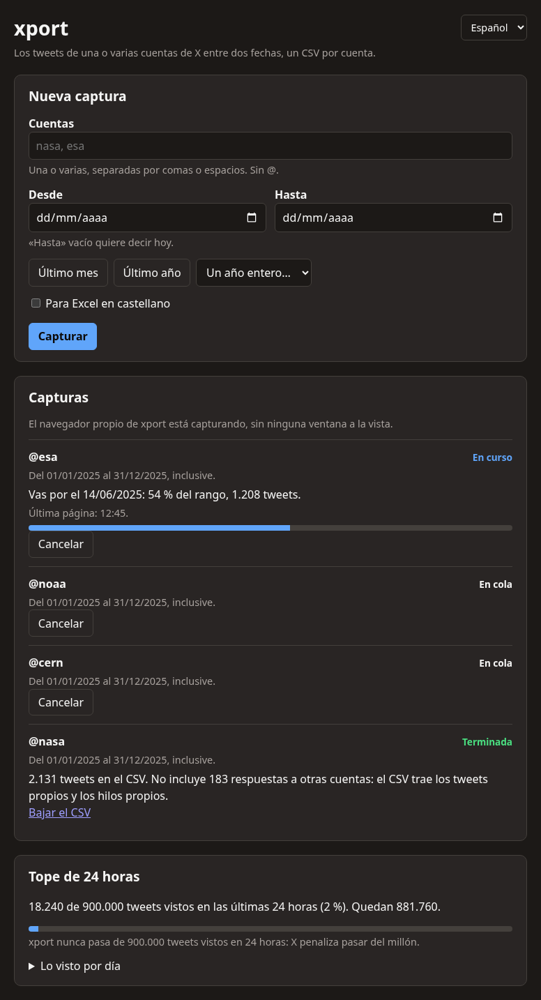
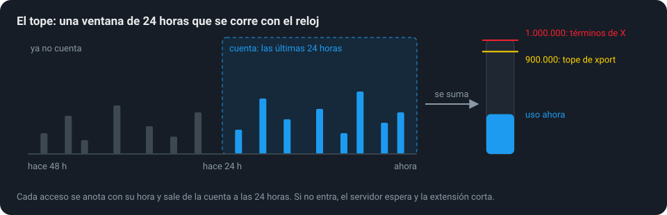

from:cuenta 2026-01-01 → 2026-06-30 ↗ cuenta_2026-01-01_2026-06-30.csv
Los tweets de cualquier cuenta de X, entre dos fechas, en un CSV.
Escribís una o varias cuentas y un rango de fechas. xport recorre la búsqueda de X por vos y te deja un CSV por cuenta: la fecha, el texto completo, los links y el tweet citado. Usa una sesión común de X, sin clave de API ni pagos.
No puede pasar el tope de los términos de X. Cuenta cada post que ve, también los citados y los retweets que después descarta, y frena en 900.000 dentro de cualquier ventana de 24 horas. Si no puede contar lo que se captura, la captura no arranca o se corta.

Varias cuentas, sin mirar

- Abrís xport desde el menú de aplicaciones y su página aparece en tu navegador. La primera vez, «Iniciar sesión en X» abre una ventana para entrar a X.
- Escribís las cuentas y las fechas y apretás «Capturar». Entran a una cola y salen de a una.
- Seguís con lo tuyo. En Linux, xport captura con su propio Chrome en una pantalla invisible. Si X frena la búsqueda, espera y sigue sola desde donde iba.
- Te avisa cuando está. Cada cuenta termina con una notificación y su CSV para bajar. Si una no trajo tweets, dice por qué: no existe, está suspendida, está protegida o no escribió en esas fechas.
El CSV
Uno por cuenta y por rango, en UTF-8 y separado por comas, con una casilla para el Excel en castellano. Los links van en una celda separados por espacios; si el tweet cita a otro, van el id y el link del citado.
cuenta_2026-01-01_2026-06-30.csv
account,created_at,content,links,quoted_tweet_id,quoted_tweet_url cuenta,2026-03-14T18:02:11+00:00,"Hoy sale el informe completo.",https://example.org/informe,, cuenta,2026-03-12T09:40:57+00:00,"Esto, sí.",,1899412345678901234,https://x.com/otra/status/1899412345678901234
El tope

El tope es 900.000 y no un millón, para dejar margen. La ventana es deslizante: un contador por día dejaría pasar casi dos millones entre las 23 y la 1. El registro del tope vive en una base aparte, así sobrevive a que borres los tweets, y ninguna opción lo cambia.
Instalar
Bajá el instalador de tu sistema desde la última versión. Trae su propio Python: solo hace falta Google Chrome (o Chromium o Edge).
Linux
tar -xzf xport-*-linux-x86_64.tar.gz ./xport/install.sh
Queda en el menú de aplicaciones y como el comando xport. Hace falta
cage, la pantalla invisible de su Chrome: el instalador avisa si
falta.
Windows
Descomprimí el .zip y hacé doble clic en xport\install.cmd. Queda en el menú Inicio y
en el escritorio.
macOS
Abrí el .tar.gz y arrastrá xport.app a Aplicaciones.
En Windows y macOS la captura la hace la extensión de xport en tu Chrome, que se carga una vez. Cada paso, cómo armar el instalador desde el código y cómo desinstalar, en Instalar.
Es privado
Lo que capturás queda en tu computadora. El servicio escucha solo en ella, responde solo a pedidos dirigidos a ella y no manda nada a ningún otro lado. La sesión de X queda en el perfil de xport y las cookies no salen de ahí.
Estado
- Linux: probado de punta a punta contra x.com, con el instalador y la captura sin ventana.
- Windows y macOS: el instalador se arma y arranca en la integración continua, pero todavía no se probó en esos sistemas.
- Con la API oficial de X, que es paga, está implementado pero no se probó contra la API real.
- Bajar sin navegador con una cuenta común no anda: x.com cambió cómo firma los pedidos.